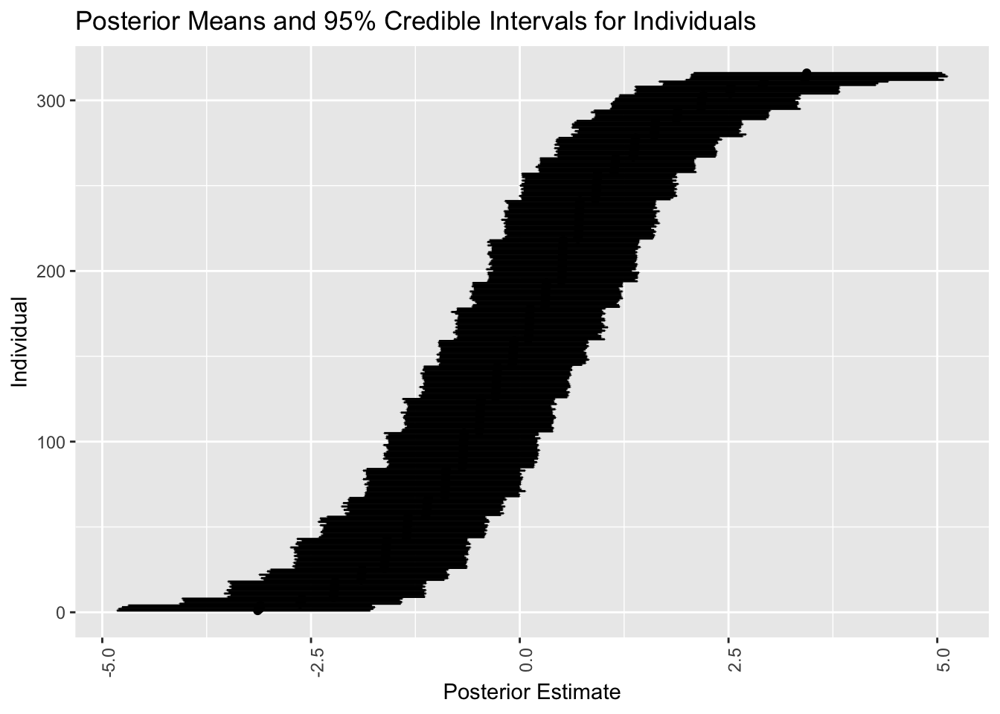

ベイズデータ解析６
応答が質的変数の場合
2024-12-05
項目反応モデルとは，被験者と項目のそれぞれが独自のパラメータを持った一般化線型混合効果モデルである． 被験者ごとの特性の違いや，項目ごとの性質の違いが視覚化できるが， 本稿では能力・難易度パラメータに更なる階層構造を考える． これにより能力パラメータを変化させている背後の要因や，項目特性と個人特性の交絡効果（特異項目機能）を解析することが可能になる． brms パッケージは極めて直感的な方法でモデルのフィッティングから事後分布の推論までを実行できる．
A Blog Entry on Bayesian Computation by an Applied Mathematician
$$
$$
(Vansteelandt, 2001), (Boeck and Wilson, 2004) による「怒るかどうか？」のデータ VerbAgg を用いる．混合モデルの点推定のためのパッケージ lme4 (Bates et al., 2015) で利用可能になっている．
library(lme4)
data("VerbAgg", package = "lme4")
df <- VerbAgg質問票は「自分が意思表示をしたのにバスが止まってくれなかったので悪態をついた」などのもので，同意できるかを３段階 “yes”, “perhaps”, “no” で評価する (Boeck and Wilson, 2004, pp. 7–8)．
応答は３段階の順序応答 resp とこれを２段階にしたもの r2 である．
kable(head(df))| Anger | Gender | item | resp | id | btype | situ | mode | r2 |
|---|---|---|---|---|---|---|---|---|
| 20 | M | S1WantCurse | no | 1 | curse | other | want | N |
| 11 | M | S1WantCurse | no | 2 | curse | other | want | N |
| 17 | F | S1WantCurse | perhaps | 3 | curse | other | want | Y |
| 21 | F | S1WantCurse | perhaps | 4 | curse | other | want | Y |
| 17 | F | S1WantCurse | perhaps | 5 | curse | other | want | Y |
| 21 | F | S1WantCurse | yes | 6 | curse | other | want | Y |
通常の１母数モデルに，過分散を説明するための固定効果の項 \(\alpha_0\) を加えたモデルを考える：
\[ g(\operatorname{P}[Y_{ik}=1])=\alpha_{j[i]}-\beta_{k[i]}+\alpha_0,\qquad\alpha_0\sim\mathrm{t}(3;0,2.5), \] \[ \alpha_j\sim\mathrm{N}(\mu_\alpha,\sigma_\alpha^2),\quad\mu_\alpha\sim\mathrm{N}(0,3),\quad\sigma_\alpha\sim\mathrm{N}(0,3), \] \[ \beta_k\sim\mathrm{N}(\mu_\beta,\sigma_\beta^2),\quad\mu_\beta\sim\mathrm{N}(0,3),\quad\sigma_\beta\sim\mathrm{N}(0,3). \]
sd というクラスはグループレベル変数の標準偏差を意味する．
\(\alpha_j,\beta_k\) の定数の違いに関する識別不可能性は，いずれも \(0\) を中心とした
formula_1PL <- bf(r2 ~ 1 + (1|item) + (1|id))
prior_1PL <- prior("normal(0,3)", class="sd", group = "id") +
prior("normal(0,3)", class="sd", group = "item")
fit_1PL <- brm(
formula_1PL,
data = df,
family = brmsfamily("bernoulli", link = "logit"),
prior = prior_1PL,
chains = 4, cores = 4
)prior_summary(fit_1PL) prior class coef group resp dpar nlpar lb ub
student_t(3, 0, 2.5) Intercept
student_t(3, 0, 2.5) sd 0
normal(0,3) sd id 0
normal(0,3) sd Intercept id 0
normal(0,3) sd item 0
normal(0,3) sd Intercept item 0
source
default
default
user
(vectorized)
user
(vectorized)vectorized というのは，下記 Stan コード内で尤度は for 文で構成されるが，このループに入れなくて良いものがある場合をいう．
stancode(fit_1PL)によって推定に用いられた Stan コードが表示できる．
次を見る限り，確かに意図したモデルになっている：
// generated with brms 2.21.0
functions {
}
data {
int<lower=1> N; // total number of observations
array[N] int Y; // response variable
// data for group-level effects of ID 1
int<lower=1> N_1; // number of grouping levels
int<lower=1> M_1; // number of coefficients per level
array[N] int<lower=1> J_1; // grouping indicator per observation
// group-level predictor values
vector[N] Z_1_1;
// data for group-level effects of ID 2
int<lower=1> N_2; // number of grouping levels
int<lower=1> M_2; // number of coefficients per level
array[N] int<lower=1> J_2; // grouping indicator per observation
// group-level predictor values
vector[N] Z_2_1;
int prior_only; // should the likelihood be ignored?
}
transformed data {
}
parameters {
real Intercept; // temporary intercept for centered predictors
vector<lower=0>[M_1] sd_1; // group-level standard deviations
array[M_1] vector[N_1] z_1; // standardized group-level effects
vector<lower=0>[M_2] sd_2; // group-level standard deviations
array[M_2] vector[N_2] z_2; // standardized group-level effects
}
transformed parameters {
vector[N_1] r_1_1; // actual group-level effects
vector[N_2] r_2_1; // actual group-level effects
real lprior = 0; // prior contributions to the log posterior
r_1_1 = (sd_1[1] * (z_1[1]));
r_2_1 = (sd_2[1] * (z_2[1]));
lprior += student_t_lpdf(Intercept | 3, 0, 2.5);
lprior += normal_lpdf(sd_1 | 0,3)
- 1 * normal_lccdf(0 | 0,3);
lprior += normal_lpdf(sd_2 | 0,3)
- 1 * normal_lccdf(0 | 0,3);
}
model {
// likelihood including constants
if (!prior_only) {
// initialize linear predictor term
vector[N] mu = rep_vector(0.0, N);
mu += Intercept;
for (n in 1:N) {
// add more terms to the linear predictor
mu[n] += r_1_1[J_1[n]] * Z_1_1[n] + r_2_1[J_2[n]] * Z_2_1[n];
}
target += bernoulli_logit_lpmf(Y | mu);
}
// priors including constants
target += lprior;
target += std_normal_lpdf(z_1[1]);
target += std_normal_lpdf(z_2[1]);
}
generated quantities {
// actual population-level intercept
real b_Intercept = Intercept;
}-1*normal_lccdf(0|0,3) というのは定数であり，推定には全く影響を与えないが，後続の bridgesampling パッケージ (Gronau et al., 2020) によるモデル比較の API 構築のために付けられたものである (Bürkner, 2021, p. 21)．
summary(fit_1PL) Family: bernoulli
Links: mu = logit
Formula: r2 ~ 1 + (1 | item) + (1 | id)
Data: df (Number of observations: 7584)
Draws: 4 chains, each with iter = 2000; warmup = 1000; thin = 1;
total post-warmup draws = 4000
Multilevel Hyperparameters:
~id (Number of levels: 316)
Estimate Est.Error l-95% CI u-95% CI Rhat Bulk_ESS Tail_ESS
sd(Intercept) 1.39 0.07 1.25 1.54 1.00 1004 1840
~item (Number of levels: 24)
Estimate Est.Error l-95% CI u-95% CI Rhat Bulk_ESS Tail_ESS
sd(Intercept) 1.22 0.19 0.91 1.64 1.00 471 1009
Regression Coefficients:
Estimate Est.Error l-95% CI u-95% CI Rhat Bulk_ESS Tail_ESS
Intercept -0.16 0.24 -0.63 0.31 1.00 355 812
Draws were sampled using sampling(NUTS). For each parameter, Bulk_ESS
and Tail_ESS are effective sample size measures, and Rhat is the potential
scale reduction factor on split chains (at convergence, Rhat = 1).低い ESS から変動効果の項 \(\epsilon_i\) の推定に苦労していることがわかる．
plot(fit_1PL)ここにはグローバルなパラメータしか表示されておらず，ランダム効果の結果は次のように見る必要がある：
library(ggplot2)
ranef_item <- ranef(fit_1PL)$item
posterior_means <- ranef_item[,1,1]
lower_bounds <- ranef_item[,3,1]
upper_bounds <- ranef_item[,4,1]
plot_df_item <- data.frame(
item = rownames(ranef_item),
mean = posterior_means,
lower = lower_bounds,
upper = upper_bounds
)p_PL1 <- ggplot(plot_df_item, aes(x = mean, y = item)) +
geom_point() +
geom_errorbar(aes(xmin = lower, xmax = upper), width = 0.2) +
theme(axis.text.x = element_text(angle = 90, hjust = 1)) +
labs(title = "Posterior Means and 95% Credible Intervals for Items",
x = "Posterior Estimate",
y = "Item")
p_PL1多くの参加者にとって腹立たしい例とそうでない例が区別できているようである．
plot_df_id <- plot_df_id %>% arrange(mean) %>% mutate(rank = row_number())
p_PL1_id <- ggplot(plot_df_id, aes(x = mean, y = rank)) +
geom_point() +
geom_errorbar(aes(xmin = lower, xmax = upper), width = 0.2) +
theme(axis.text.x = element_text(angle = 90, hjust = 1)) +
labs(title = "Posterior Means and 95% Credible Intervals for Individuals",
x = "Posterior Estimate",
y = "Individual")
p_PL1_id
こうして怒りやすかった人を並べることができる．
しかしガタガタしている区分定数的な模様が見れる．実はこれは item の分だけある．というのも，「何個の項目に Yes と答えたか」だけが \(\alpha_j\) を決める要因になってしまっているためである．
これが項目識別のできない１母数モデルの限界である．
項目識別力母数 \(\gamma_k\) を導入する： \[ g(\mu_i)=\gamma_{k[i]}\biggr(\alpha_{j[i]}-\beta_{k[i]}\biggl), \]
すると追加の制約が必要になる．ここでは理想点モデルの場合と違い，研究のデザインから \(\gamma_{k[i]}\) は正として良いだろう．
これを変数変換 \(\gamma_k=\exp(\log\gamma_k)\) によってモデルに知らせることとする．
formula_2PL <- bf(
r2 ~ exp(loggamma) * eta,
loggamma ~ 1 + (1|i|item),
eta ~ 1 + (1|i|item) + (1|id),
nl = TRUE
)\(g(\mu_i)\) の右辺はもはや \(\log\gamma_k\) の線型関数ではないので，これを nl=TRUE によって知らせる必要がある．
|i| によって，\(\log\gamma_k\) と \(\eta_{jk}\) 内の項 \(\beta_k\) には相関があることを知らせている (Bürkner, 2018, p. 397)．項目難易度 \(\beta_k\) が低いほど識別力 \(\log\gamma_k\) は低いとしているのである．
prior_2PL <- prior("normal(0,5)", class="b", nlpar = "eta") +
prior("normal(0,1)", class="b", nlpar = "loggamma") +
prior("constant(1)", class="sd", group = "id", nlpar = "eta") +
prior("normal(0,3)", class="sd", group = "item", nlpar = "eta") +
prior("normal(0,1)", class="sd", group = "item", nlpar = "loggamma")
fit_2PL <- brm(
formula = formula_2PL,
data = df,
family = brmsfamily("bernoulli", link = "logit"),
prior = prior_2PL,
chains = 4, cores = 4
)ついに Stan が２分ほどかかるようになった上に，収束に苦労しており，ESS が低くなっている．
summary(fit_2PL)Warning: There were 1 divergent transitions after warmup. Increasing
adapt_delta above 0.8 may help. See
http://mc-stan.org/misc/warnings.html#divergent-transitions-after-warmup Family: bernoulli
Links: mu = logit
Formula: r2 ~ exp(loggamma) * eta
loggamma ~ 1 + (1 | i | item)
eta ~ 1 + (1 | i | item) + (1 | id)
Data: df (Number of observations: 7584)
Draws: 4 chains, each with iter = 2000; warmup = 1000; thin = 1;
total post-warmup draws = 4000
Multilevel Hyperparameters:
~item (Number of levels: 24)
Estimate Est.Error l-95% CI u-95% CI Rhat
sd(loggamma_Intercept) 0.12 0.06 0.01 0.24 1.01
sd(eta_Intercept) 0.93 0.16 0.68 1.28 1.00
cor(loggamma_Intercept,eta_Intercept) 0.31 0.36 -0.46 0.90 1.01
Bulk_ESS Tail_ESS
sd(loggamma_Intercept) 712 874
sd(eta_Intercept) 1076 1826
cor(loggamma_Intercept,eta_Intercept) 264 645
~id (Number of levels: 316)
Estimate Est.Error l-95% CI u-95% CI Rhat Bulk_ESS Tail_ESS
sd(eta_Intercept) 1.00 0.00 1.00 1.00 NA NA NA
Regression Coefficients:
Estimate Est.Error l-95% CI u-95% CI Rhat Bulk_ESS Tail_ESS
loggamma_Intercept 0.32 0.06 0.20 0.44 1.00 1193 1895
eta_Intercept -0.14 0.20 -0.52 0.25 1.00 1186 1676
Draws were sampled using sampling(NUTS). For each parameter, Bulk_ESS
and Tail_ESS are effective sample size measures, and Rhat is the potential
scale reduction factor on split chains (at convergence, Rhat = 1).ranef_item2 <- ranef(fit_2PL)$item
posterior_means <- ranef_item2[,1,"eta_Intercept"]
lower_bounds <- ranef_item2[,3,"eta_Intercept"]
upper_bounds <- ranef_item2[,4,"eta_Intercept"]
plot_df_item2 <- data.frame(
item = rownames(ranef_item2),
mean = posterior_means,
lower = lower_bounds,
upper = upper_bounds
)
p_PL2 <- ggplot(plot_df_item2, aes(x = mean, y = item)) +
geom_point() +
geom_errorbar(aes(xmin = lower, xmax = upper), width = 0.2) +
theme(axis.text.x = element_text(angle = 90, hjust = 1)) +
labs(title = "2PL Model",
x = "Posterior Estimate",
y = "Item")
grid.arrange(p_PL1, p_PL2, nrow = 1)識別力パラメータ \(\gamma_k\) が \(1\) より大きい値をとっており，これが変動を吸収しているため，\(\alpha_j\) は \(0\) に縮小されて推定されるようになっている．
ranef_id2 <- ranef(fit_2PL)$id
posterior_means <- ranef_id2[,1,"eta_Intercept"]
lower_bounds <- ranef_id2[,3,"eta_Intercept"]
upper_bounds <- ranef_id2[,4,"eta_Intercept"]
plot_df_id2 <- data.frame(
id = rownames(ranef_id2),
mean = posterior_means,
lower = lower_bounds,
upper = upper_bounds
)plot_df_id2 <- plot_df_id2 %>% arrange(mean) %>% mutate(rank = row_number())
p_PL2_id <- ggplot(plot_df_id2, aes(x = mean, y = rank)) +
geom_point() +
geom_errorbar(aes(xmin = lower, xmax = upper), width = 0.2) +
theme(axis.text.x = element_text(angle = 90, hjust = 1)) +
labs(title = "2PL Model",
x = "Posterior Estimate",
y = "Individual")
grid.arrange(p_PL1_id, p_PL2_id, nrow = 1)少し滑らかになっている．
cor(ranef_id[,1,"Intercept"], ranef_id2[,1,"eta_Intercept"])[1] 0.9994873しかし線型の相関になっており，軟化以上の変化は導入されなかったことがわかる．
それもそうである．モデルの表現力はあげたから解像度は高くなったが，モデルに新しい情報を入れたわけではないのである．
理想点モデルなど多くの項目応答モデルは，\(\alpha_j,\beta_k\) の推定に終始してきたが，本当のリサーチクエスチョンはその先にある．
個人レベルの共変量を追加した階層モデルを構築して，\(\alpha_j\) の位置や応答の傾向への影響を調べることが真の目標であった．
本データにおいて項目は \(2\times2\times3\) の split-plot デザインがなされている．
mode とは「悪態をつきたい」と「咄嗟についてしまう」という２種の行動を区別するためのものである．この２つの行動容態は，本人の抑制的な意識が実際に働いたかどうかにおいて全く質的に異なる．モデルにこれを教えたらどうなるだろうか？
situ とはシチュエーションであり，自分に責任があるか（「店に入ろうとした瞬間閉店時間になった」など）他人に責任があるか（「バスが止まってくれなかった」など）の２項目がある．
btype は行動様式であり，「悪態をつく」「叱る」「怒鳴りつける」の３項目がある．後に行くほど他人への攻撃性が強い．
最初に考えられるモデル
r2 ~ btype + situ + mode + (1|item) + (1 + mode|id)は，元々の１母数モデルに変動切片項を３つ追加した上に，mode の係数を個人ごとに変えることを許したものである．これは mode の効果が個人ごとに異なるだろうという信念による．
しかしこのモデルに至る前に，1 を 0 にすることで modedo と modewant 双方の標準偏差を推定することを考える（1 の場合は modewant の標準偏差の代わりに Intercept の標準偏差を推定する）．
formula_1PL_cov <- bf(
r2 ~ btype + situ + mode + (1|item) + (0 + mode|id)
)
fit_1PL_cov <- brm(
formula = formula_1PL_cov,
data = df,
family = brmsfamily("bernoulli", link = "logit"),
prior = prior_1PL,
chains = 4, cores = 4
)summary(fit_1PL_cov) Family: bernoulli
Links: mu = logit
Formula: r2 ~ btype + situ + mode + (1 | item) + (0 + mode | id)
Data: df (Number of observations: 7584)
Draws: 4 chains, each with iter = 2000; warmup = 1000; thin = 1;
total post-warmup draws = 4000
Multilevel Hyperparameters:
~id (Number of levels: 316)
Estimate Est.Error l-95% CI u-95% CI Rhat Bulk_ESS
sd(modewant) 1.47 0.09 1.30 1.65 1.00 1898
sd(modedo) 1.67 0.10 1.48 1.88 1.00 1932
cor(modewant,modedo) 0.77 0.04 0.69 0.84 1.00 1674
Tail_ESS
sd(modewant) 3005
sd(modedo) 2826
cor(modewant,modedo) 2675
~item (Number of levels: 24)
Estimate Est.Error l-95% CI u-95% CI Rhat Bulk_ESS Tail_ESS
sd(Intercept) 0.46 0.09 0.32 0.68 1.00 1643 2370
Regression Coefficients:
Estimate Est.Error l-95% CI u-95% CI Rhat Bulk_ESS Tail_ESS
Intercept 1.88 0.23 1.42 2.32 1.00 1923 2640
btypescold -1.12 0.24 -1.60 -0.63 1.00 2004 2515
btypeshout -2.23 0.25 -2.73 -1.74 1.00 1962 2482
situself -1.12 0.21 -1.53 -0.70 1.00 1941 2500
modedo -0.77 0.21 -1.18 -0.33 1.00 2114 2523
Draws were sampled using sampling(NUTS). For each parameter, Bulk_ESS
and Tail_ESS are effective sample size measures, and Rhat is the potential
scale reduction factor on split chains (at convergence, Rhat = 1).modedo の係数が負になっており，悪態をつきたくなっても，実際にする人の割合は下がることがわかる．
だが係数の -0.77 が大きいかどうかがわからない．これには対数オッズ比のスケールから元のスケールに戻す便利な関数がある：
conditional_effects(fit_1PL_cov, "mode")確率としての減少は軽微だがあることがわかる．次に気づくことは do の方がエラーバーが長いことである．２つの係数は相関しているので，頻度論的な検定は難しいかもしれないが，２つの標準偏差の差の事後分布を見ることでチェックすることができる：
hyp <- "modedo - modewant > 0"
hypothesis(fit_1PL_cov, hyp, class = "sd", group = "id")Hypothesis Tests for class sd_id:
Hypothesis Estimate Est.Error CI.Lower CI.Upper Evid.Ratio
1 (modedo-modewant) > 0 0.2 0.12 0.01 0.39 23.1
Post.Prob Star
1 0.96 *
---
'CI': 90%-CI for one-sided and 95%-CI for two-sided hypotheses.
'*': For one-sided hypotheses, the posterior probability exceeds 95%;
for two-sided hypotheses, the value tested against lies outside the 95%-CI.
Posterior probabilities of point hypotheses assume equal prior probabilities.0.96 の確率で modedo の標準偏差の方が大きいことがわかるが，その差も 0.2 ほどで，対数オッズ比としては大したことがないと思われる．
Trait Anger スコア (Spielberger, 2010) が個人ごとに算出されており（Anger 変数），そのスコアによってどのように項目への反応が違うかを調べる．こうするとどんどん心理学の研究っぽくなる．
formula_1PL_cov_id <- bf(
r2 ~ Anger + Gender + btype + situ + mode + mode:Gender + (0+Gender|item) + (0+mode|id)
)
fit_1PL_cov_id <- brm(
formula = formula_1PL_cov_id,
data = df,
family = brmsfamily("bernoulli", link = "logit"),
prior = prior_1PL,
chains = 4, cores = 4,
iter = 3000 # これ以上大きくすると GitHub にあげられない
)summary(fit_1PL_cov_id) Family: bernoulli
Links: mu = logit
Formula: r2 ~ Anger + Gender + btype + situ + mode + mode:Gender + (0 + Gender | item) + (0 + mode | id)
Data: df (Number of observations: 7584)
Draws: 4 chains, each with iter = 2000; warmup = 1000; thin = 1;
total post-warmup draws = 4000
Multilevel Hyperparameters:
~id (Number of levels: 316)
Estimate Est.Error l-95% CI u-95% CI Rhat Bulk_ESS
sd(modewant) 1.49 0.09 1.32 1.67 1.00 1998
sd(modedo) 1.58 0.10 1.40 1.78 1.00 1715
cor(modewant,modedo) 0.78 0.04 0.70 0.85 1.00 1529
Tail_ESS
sd(modewant) 2740
sd(modedo) 2531
cor(modewant,modedo) 2380
~item (Number of levels: 24)
Estimate Est.Error l-95% CI u-95% CI Rhat Bulk_ESS
sd(GenderF) 0.52 0.11 0.35 0.77 1.01 1342
sd(GenderM) 0.34 0.11 0.16 0.57 1.00 1659
cor(GenderF,GenderM) 0.78 0.18 0.32 0.99 1.00 2178
Tail_ESS
sd(GenderF) 2491
sd(GenderM) 2553
cor(GenderF,GenderM) 1911
Regression Coefficients:
Estimate Est.Error l-95% CI u-95% CI Rhat Bulk_ESS Tail_ESS
Intercept 0.74 0.44 -0.14 1.59 1.00 1293 2072
Anger 0.06 0.02 0.02 0.09 1.00 1274 2101
GenderM -0.10 0.24 -0.56 0.38 1.00 931 1839
btypescold -1.03 0.22 -1.46 -0.60 1.00 1931 2144
btypeshout -2.43 0.25 -2.90 -1.94 1.00 1472 1396
situself -1.04 0.18 -1.38 -0.68 1.00 1919 2346
modedo -0.98 0.23 -1.43 -0.51 1.00 1738 2315
GenderM:modedo 0.89 0.24 0.40 1.35 1.00 2525 2932
Draws were sampled using sampling(NUTS). For each parameter, Bulk_ESS
and Tail_ESS are effective sample size measures, and Rhat is the potential
scale reduction factor on split chains (at convergence, Rhat = 1).conditional_effects(fit_1PL_cov_id, "Anger")conditional_effects(fit_1PL_cov_id, "mode:Gender")Anger の値が大きいほど悪態をつく確率が綺麗に上がっていく様子がわかる．
加えて，女性の方が悪態を吐こうと思っても，実際に行動に移すには大きな壁があることがわかる．こうして mode と Gender の間の交絡が陽の下に明らかになった．
このような，項目共変量と個人共変量の間の交絡は 特異項目機能 (DIF: Differential Item Functioning) と呼ばれる．項目の特性が，被験者のグループによって違った機能を示すことは，例えばテスト理論では個人の潜在特性を推定する際の重大なノイズ要因となっており，これを統制することが重要な課題になる．
この特異項目機能を，項目の特性ごとにさらに詳しく見ていく．
特に怒鳴りつける行動様式を除き，悪態をつく行為と叱る行為は，男性と女性において違う機能を持っているのではないか？という仮説を検証してみる．
女性が実際に悪態をつく／叱る行為にだけマークをつけるダミー変数 dif を用意する：
df$dif <- as.numeric(with(
df,
Gender == "F" & mode == "do" & btype %in% c("curse", "scold")
))formula_1PL_dif <- bf(
r2 ~ Gender + dif + (1|item) + (1|id)
)fit_1PL_dif <- brm(
formula = formula_1PL_dif,
data = df,
family = brmsfamily("bernoulli", link = "logit"),
prior = prior_1PL,
chains = 3, cores = 3,
# iter = 3000 # これ以上大きくすると GitHub にあげられない
)summary(fit_1PL_dif) Family: bernoulli
Links: mu = logit
Formula: r2 ~ Gender + dif + (1 | item) + (1 | id)
Data: df (Number of observations: 7584)
Draws: 3 chains, each with iter = 2000; warmup = 1000; thin = 1;
total post-warmup draws = 3000
Multilevel Hyperparameters:
~id (Number of levels: 316)
Estimate Est.Error l-95% CI u-95% CI Rhat Bulk_ESS Tail_ESS
sd(Intercept) 1.40 0.07 1.26 1.54 1.00 793 1557
~item (Number of levels: 24)
Estimate Est.Error l-95% CI u-95% CI Rhat Bulk_ESS Tail_ESS
sd(Intercept) 1.34 0.21 1.00 1.84 1.01 684 1088
Regression Coefficients:
Estimate Est.Error l-95% CI u-95% CI Rhat Bulk_ESS Tail_ESS
Intercept 0.12 0.31 -0.51 0.72 1.00 304 502
GenderM -0.01 0.21 -0.45 0.41 1.00 573 864
dif -0.95 0.14 -1.23 -0.67 1.00 2875 1778
Draws were sampled using sampling(NUTS). For each parameter, Bulk_ESS
and Tail_ESS are effective sample size measures, and Rhat is the potential
scale reduction factor on split chains (at convergence, Rhat = 1).dif の係数 -0.94 を見ることで，殊に「女性」と「実際に悪態を吐いたり叱ったりする」という組み合わせは特異な項目機能を持っていることがわかる．
(Bürkner, 2021) に項目応答モデルのベイズ的な扱いが取り上げられている．特にパッケージ brms を用いた例が３つある．
DIF に関する日本語文献に (龍一, 2012) がある．